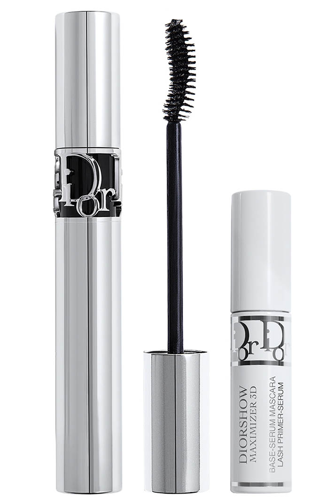

MakeUp
In this section I will explain the most popular DIOR's MakeUp items such as:
- Lip glosses
- Blushes
- Highlighters
- Mascaras
- Foundations
LIP GLOSS
The main purpose of a Lipgloss is to give lips a shiny lustre slick finish and in some cases to add subtle colour. Lipglosses can be in liquid form or an easy-to-apply solid. They are typically shiny, but can also have a glittery, opalescent, or metallic finish.
Lip gloss can also help to hydrate and protect lips.
- Product name on the Dior website:
- Dior Addict Lip Maximizer
- Dior Addict Lip Glow
BLUSH
Blush can help to brighten up a face, add a healthy glow look, and contour your features. It is also a great way to add a pop of color to Make Up.
Blush is a game-changer in the makeup routine. Blush helps to bring life back to the face, giving the cheeks a youthful, rosy warmth that looks fresh and naturally flushed.
- Product name on the Dior website:
- Dior Backstage Rosy Glow Blush
HIGHLIGTHER
Highlighter in makeup giving a face a dewy look and adding a natural glow to the face. It's typically applied on the cheekbones, nose bridge, chin, and forehead of face. It adds depth to the facial features creating an impression of glowing skin.
Also attracting light and enhancing skin tone, for a lit-from-within look, and can be used to accentuate and "lift" bone structure.
- Product name on the Dior website:
- Dior Backstage Glow Face Palette
MASCARA
Mascaras are pigmented preparations for application to the eyelashes to make them look darker and longer and to make the whites of the eyes look brighter by contrast.
Mascaras enhance both upper and lower eyelashes, providing options to thicken, color, curl and add volume. Mascaras are available in water-resistant and volumizing formulas. The most prevalent type of mascara consists of a liquid in a tube with an application brush.
- Product name on the Dior website:
- Diorshow Iconic Overcurl
FOUNDATION

Foundation is a liquid applied to the face and neck to create an even, uniform color to the complexion, cover flaws and to change the natural skin tone. Foundations also function as a base layer for more complex cosmetics.
Foundation is meant to be worn on your entire face. Think of it as the base for the rest of the makeup routine.
- Product name on the Dior website:
- Dior Backstage Face and Body Foundation